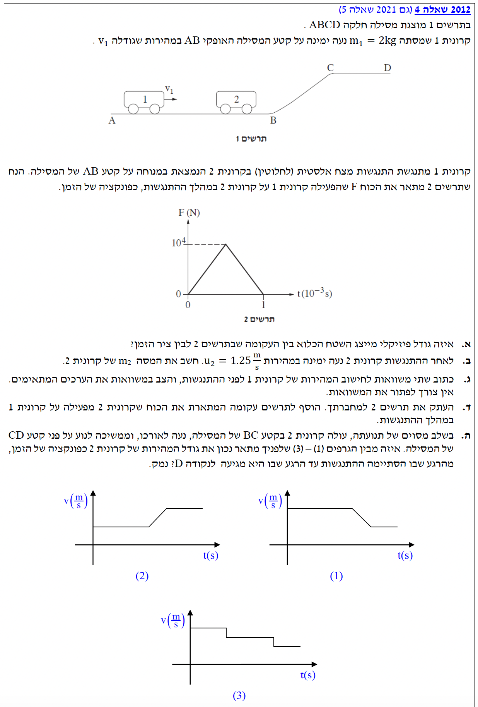

פתרון מלא ומודרך צעד-אחר-צעד הכולל ניתוח גרפים ותרשימי כוחות.
עודכן:--- --:--:--
מבט כללי על השאלה
שלום תלמידים יקרים! בשאלה זו אנו מתמודדים עם בעיה המשלבת ניתוח גרף כוח-זמן, חוקי שימור בהתנגשויות וניתוח קינמטי של תנועה על מסילה.
נפרק את השאלה צעד אחר צעד בצורה מסודרת, תוך שימוש בחוקי הפיזיקה ודף הנוסחאות.

[תמונת השאלה המקורית]לא נמצאה תמונה בשם question-image.png באותה תיקייה.
סעיף א': משמעות השטח תחת הגרף
מה נתון: נתון לנו תרשים 2, שהוא גרף המתאר את הכוח \(F(N)\) שהפעילה קרונית 1 על קרונית 2 במהלך ההתנגשות, כפונקציה של הזמן \(t(10^{-3}s)\). הגרף מציג כוח שאינו קבוע, אלא משתנה בזמן (צורת משולש).
מה מחפשים: אנו נדרשים לקבוע איזה גודל פיזיקלי מיוצג על ידי השטח הכלוא בין העקומה (הגרף) לבין ציר הזמן.
נוסחאות ועקרונות בשימוש:
לפי דף הנוסחאות, תחת הנושא "מתקף ותנע", הנוסחה למתקף של כוח משתנה היא \(\vec{J} = \int_{t_1}^{t_2} \vec{F}(t) dt\). מבחינה מתמטית, האינטגרל המסוים של פונקציה ממשית חיובית מייצג את השטח הכלוא תחת הגרף של אותה פונקציה. בנוסף קיים משפט עבודה-אנרגיה, אך עבודה מוגדרת כשטח מתחת לגרף כוח-מקום, ואילו כאן זהו גרף כוח-זמן.
פתרון צעד-אחר-צעד:
מאחר והגרף מתאר כוח כפונקציה של זמן, מכפלת הכוח (הציר האנכי) בזמן (הציר האופקי), או במקרה של כוח משתנה - השטח הכלוא מתחת לגרף, מייצגת את המתקף שהכוח מפעיל.
השטח הכלוא בין העקומה בתרשים 2 לבין ציר הזמן מייצג את המתקף (\(\vec{J}\)) שהפעילה קרונית 1 על קרונית 2.
הערת מורה:
תמיד בדקו את יחידות המידה של הצירים! בגרף כוח-זמן, יחידות השטח הן מכפלה של יחידות ציר y ביחידות ציר x, כלומר ניוטון כפול שנייה \( (N \cdot s) \). אלו הן בדיוק יחידות המידה של מתקף, וגם של תנע, שהרי מתקף שווה לשינוי בתנע \(\vec{J} = \Delta \vec{p}\).
סעיף ב': חישוב מסת קרונית 2
מה נתון:
מהירות קרונית 2 לפני ההתנגשות (במנוחה): \(v_2 = 0 \text{ m/s}\).
מהירות קרונית 2 לאחר ההתנגשות: \(u_2 = 1.25 \text{ m/s}\) (ימינה, נגדיר כיוון חיובי ימינה).
המרת יחידות (שלב 0) לציר הזמן: בסיס המשולש הוא 1, אך היחידות הן מילישניות, לכן הזמן הוא \(\Delta t = 1 \cdot 10^{-3} \text{ s}\).
גובה המשולש המייצג את הכוח המקסימלי: \(F_{max} = 10^4 \text{ N}\).
מה מחפשים: את המסה של קרונית 2, נסמן אותה ב- \(m_2\).
הערת מורה:
שימו לב כמה חשוב להמיר את יחידות הזמן לשניות! ציר הזמן מסומן כ- \( t(10^{-3}s) \), מה שאומר שכל ערך על הציר מוכפל ב- \( 10^{-3} \). אם היינו שוכחים זאת, היינו מקבלים מתקף עצום של 5000 ושגיאה חמורה במסה. המרת יחידות למערכת MKS צריכה להיות הפעולה הראשונה שלכם לפני כל הצבה.
הערת מורה:
שימו לב שבשאלות המבקשות "לכתוב משוואות... ואין צורך לפתור", החלק החשוב ביותר הוא ההצבה הנכונה של הסימנים (+/-) בהתאם לציר שבחרנו. מכיוון שאיננו יודעים בוודאות את כיוון המהירות \(u_1\) לאחר ההתנגשות, אנו מניחים אותו כחיובי (נעלם), ואם היינו פותרים והתשובה הייתה יוצאת שלילית, היינו מסיקים שהקרונית נעה שמאלה.
סעיף ד': שרטוט גרף הכוח שמפעילה קרונית 2 על 1
מה נתון: נתון הגרף המקורי המראה את הכוח שקרונית 1 מפעילה על 2: כוח חיובי המגיע לשיא של \(10^4 \text{ N}\) בפרק זמן של מילישנייה אחת.
מה מחפשים: להוסיף לאותה מערכת צירים עקומה המתארת את הכוח שקרונית 2 מפעילה על קרונית 1 במהלך ההתנגשות.
נוסחאות ועקרונות בשימוש: \(\vec{F}_{1 \to 2} = -\vec{F}_{2 \to 1}\) (החוק השלישי של ניוטון - פעולה ותגובה)
פתרון והמחשה גרפית:
מכיוון שהכוח שקרונית 2 מפעילה על 1 צריך להיות שווה בגודלו והפוך בכיוונו בכל רגע נתון, הגרף של כוח זה יהיה תמונת ראי (שיקוף ביחס לציר הזמן האופקי) של הגרף המקורי. השיא של המשולש החדש יהיה בערך \(-10^4 \text{ N}\).
מסקנה: הגרף שהתווסף (באדום מלא) הוא משולש זהה למקור, אך הפוך ונמצא מתחת לציר הזמן.
הערת מורה:
תלמידים נוטים לפעמים לחשוב שגוף בעל מסה גדולה יותר מפעיל כוח חזק יותר בזמן התנגשות. החוק השלישי של ניוטון הוא חד משמעי: האינטראקציה הדדית והכוחות תמיד, אבל תמיד, שווים בגודלם! זה לא משנה אם משאית מתנגשת בזבוב או קרונית 1 בקרונית 2, גרפי הכוחות תמיד יהיו תמונת ראי מושלמת.
סעיף ה': בחירת גרף מהירות-זמן מתאים
מה נתון:
קרונית 2 נעה על מסילה חלקה (חיכוך זניח) המורכבת משלושה קטעים:
(1) קטע AB אופקי לחלוטין.
(2) קטע BC משופע (עלייה).
(3) קטע CD אופקי לחלוטין.
מה מחפשים: לבחור מבין שלושה גרפים את זה המתאר נכונה את גודל המהירות של קרונית 2 כפונקציה של הזמן (מסיום ההתנגשות עד לנקודה D), ולנמק.
בקטע זה פועלים על הקרונית כוח הכובד מטה והכוח הנורמלי מעלה והם מאזנים זה את זה. שקול הכוחות האופקיים הוא אפס. התאוצה היא אפס והמהירות קבועה (קו אופקי בגרף).
שלב 2: תנועה במעלה השיפוע BC
כאשר הקרונית עולה במעלה השיפוע, רכיב כוח הכובד פועל נגד כיוון התנועה. נבחר ציר \(x\) מעלה המדרון. \(F_x = -mg \sin(\alpha)\). לכן, התאוצה היא \(a_x = -g \sin(\alpha)\).
התאוצה קבועה ושלילית, ולכן גודל המהירות קטן בקצב קבוע (שיפוע שלילי מתון בגרף).
שלב 3: תנועה על הקטע האופקי CD
המסילה שוב אופקית וחלקה, התאוצה מתאפסת והמהירות נשארת קבועה. כיוון שהיא קטנה בשיפוע, הקו יהיה אופקי אך נמוך יותר מקטע AB.
מסקנה מניתוח הגרפים:
• גרף (2) מראה מהירות שגדלה בעלייה - לא הגיוני.
• גרף (3) מראה קפיצות (שינוי מהירות בזמן אפס) - קורה רק במכת התנגשות.
• גרף (1) מציג מהירות קבועה, אחריה ירידה לינארית ולבסוף מהירות קבועה ונמוכה יותר - תיאור מדויק.
מסקנה: גרף (1) הוא הגרף הנכון המתאר את מהירות קרונית 2.
הערת מורה:
תמיד קשרו את צורת הגרף למשוואת החוק השני של ניוטון! אם אין כוח שקול, השיפוע של גרף המהירות (התאוצה) חייב להיות אפס (קו אופקי). אם יש כוח קבוע בניגוד לכיוון התנועה, חייב להיות שיפוע שלילי קבוע. אל תפלו במלכודת של גרף המייצג קפיצות פתאומיות במהירות – זכרו שקפיצה מיידית כזו מתרחשת בפיזיקה התיכונית רק כאשר פועל כוח אימפולסיבי (כמו מכה או התנגשות), ולא במהלך תנועה רציפה של גוף על מסילה.
נוסח השאלה המקורית
[תמונת השאלה המקורית]לא נמצאה תמונה בשם question-image.png.